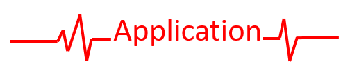

This project initiated a collaboration between the Surgical Planning Laboratory and the Center for Neurological Imaging, two research laboratories of the Brigham and Women's Hospital, Harvard Medical School.
A laparoscopic surgery is a minimally invasive surgical procedure. Instead of cutting a large incision to look directly at the operated organs, the surgeon proceeds through smaller incisions and uses a camera and special tools to conduct the operation.
The goal of this project is to build an application using virtual reality to help surgeons perform laparoscopic surgeries while improving the SPINE dataset of annotated images.
This project aims to be used in the operating room.

Set-up
The application was designed with Unity3D for the HTC Vive and two Vive controllers.
An assistant wears the headset while the surgery is performed and annotate key frames extracted from the surgical video.
Virtual environment
The virtual environment is organized so the user can easily reach and see every useful information at the same time. It is divided in 3 parts:
- The desktop: situated right in front of the user, it encompasses the screen where the video is rendered and a workspace to annotate the selected images
- The automatic wall: on the left side of the user, it contains a sequence of up to 30 images, which is refreshed every second on a “last-in, first-out” basis with a new frame extracted from the video.
- The collection wall: on the right side of the user, this wall contains the annotated images that are going to be uploaded to SPINE.